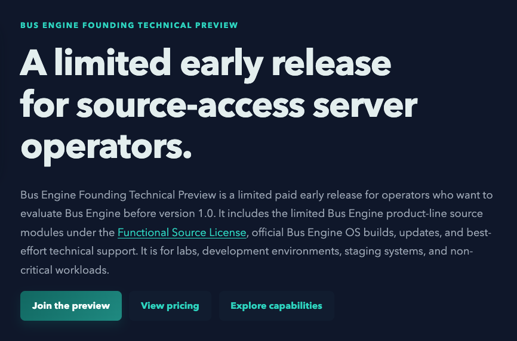

Bus Engine OS live browser preview

Bus Engine OS browser lab This frame can boot Bus Engine OS inside your browser. It needs the QEMU WebAssembly files, the Bus Engine OS image, and the required browser security headers. If any part is unavailable, the captured boot preview remains visible.
Checking browser support...